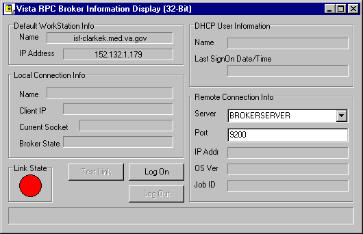

Troubleshooting
Topics
Test the Broker
Using the RPC Broker Diagnostic Program
This version of the Broker includes a new
diagnostic tool for the client workstation. This tool can be used to verify and
test the Broker client/server connection and signon process. This program (i.e.,
RPCTEST.EXE) also displays specific information about the client workstation
that can be useful to IRM personnel when trying to determine and/or correct any
problems with or to test the Broker.
It displays the following information:
- Default workstation information that
includes the Name and IP Address
- Local connection information that
includes the Name, Client IP, and Current Socket
- VISTA
user information that includes the Name and Last SignOn Date/Time
- Remote connection information that
includes the Server, Port, IP Address, and Operating System Version information
- A color coded Link State indicator that
shows the status of your connection (i.e., red = no link/connection, yellow =
attempting link/connection, and green = successful link/connection)
When you run the diagnostic program (i.e.,
RPCTEST.EXE), the following application window will be displayed:

You should verify that the connection from
the client workstation to the server is functioning correctly. For example:
- Try logging on to the server by pressing
the "Log On" button, you will be presented with the signon window. The
Link State indicator will change from red to yellow to green as you progress
through the connection process.
- Test various connections by changing the
server and port information under the "Remote Connection Info" block.
To verify the connection process is working properly, try logging on to known
servers and ports with Listeners running.
You can also use this tool to resolve a
server address without having to log on to the server. Type in a server name in
the "Server" box located in the Remote Connection section of the
dialog box and press the enter key. If the server can be found, the IP address
will be displayed in the "IP Addr" box in that same section.
If you encounter an error while testing
the Broker, make sure you check the following:
- Is the Broker Listener running on the
specified port? If not, start the Broker Listener on the specified port.
- Have you installed all current Kernel,
Kernel Toolkit, and VA FileMan patches? If not, you must install all required
patches (see the RPC Broker V. 1.1 Installation
Guide).
- Did you change the IP address for
BROKERSERVER in the HOSTS file in this
session? If the IP address and server name are not resolvable, you need to
correct the entry.
 |
Your site can use the
HOSTS file or DNS to resolve IP
addresses and server names. If the HOSTS file is not supported in your LAN, then
you will need to work with the DNS database and see if the value returned by the
DNS query really identifies the machine where the listener is running. |
- Is the IP address resolvable for the
BROKERSERVER listed under the TCP/IP Server? If not, edit the
HOSTS file in your Windows directory
and correct the IP address for the BROKERSERVER or resolve the IP address with
DNS.
- Does the TCP/IP address (used in the
HOSTS file) correspond to the IP
address that is owned by the node used to start up the Broker Listener? If you
have several nodes that can service your Test/Production account, you must make
sure that the one used to start up the Listener is the one being referenced in
the HOSTS file.
Verify and Test the
Network Connection
To detect and avoid network problems, do
the following:
- First, make sure you actually have TCP/IP
running correctly on your workstation.
At the DOS prompt type PING
nnn.nnn.nnn.nnn to the server host to which you are trying to connect (where
nnn.nnn.nnn.nnn equals the IP address of the server). For example:
C:\>PING 127.0.0.1
Alternatively, you can PING the same
server name you are trying to connect to or resolve (e.g., BROKERSERVER). For
example:
C:\>PING BROKERSERVER
|
"PINGing" is a way to test
connectivity. PINGing sends an Internet Control Message Protocol (ICMP) packet
to the server in question and requests a response. It verifies that the server
is running and the network is properly configured. |
- If the host is unreachable, there is a
network problem and you should consult with your network administrator.
- If you get a time-out, it may be your
network configuration on the client workstation, proceed to Step 2.
- If the server is reachable, proceed to
Step 4.
- Check the properties of the
WINSOCK.DLL on the client workstation and make sure
it's the correct version. Install the latest Service Pack.
- Make sure that the files on the client
are in the correct directories. In Windows 95, the WINSOCK.DLL expects the
HOSTS file to be located in the WINDOWS
root directory. You should only have one copy each of the WINSOCK.DLL and the
HOSTS file on the client. (However, there may be a second copy that WIN95 keeps
in the WINDOWS/SYSBCKUP directory). If Windows 95 detects that some of its core
files have been overwritten with older versions, supposedly it will
automatically update files on reboot.
- Make sure that all of the client
workstation TCP/IP settings are correct in the network properties. Typo's, etc.
can be a real problem, as can gateways, DNS servers, etc. Try removing items in
your WINS configuration/DNS configuration, etc.
|
For more information on
telecommunications support, please visit the Telecommunications Support Office
Home Page at the following address:
http://vaww.va.gov/tso/default.htm |
Signon Delays
Users signing on to VISTA on a client workstation with the Broker Client
Agent running should not experience any signon delays.
In order to provide users with the
capability of single signon in both
a GUI and roll-and-scroll Telnet session, the Kernel signon process was
modified.
The Kernel signon process now tries to
contact the RPC Broker V. 1.1 Client
Agent on the client workstation (i.e., prior to and following the Access/Verify code prompts) to allow
single signon to take place. A three-second (or less) delay is built into this
process while attempting to connect to the Client Agent and allow for any
possible
network delays.
If you wish to eliminate the three second
(or less) signon delay in a GUI/Telnet session (i.e., not associated
with network delays), do either of the following:
- Disable auto signon (a.k.a.
single signon) for all users by setting the DEFAULT AUTO SIGN-ON field
in the Kernel System Parameters file to "Disabled'"
- Install and run the Broker Client Agent
on all client workstations, if auto signon is enabled on your system.
Customer
Support
The VA's VISTA Software Development division determined
that Borland's Delphi for the Microsoft Windows environment will be the
supported platform for client/server applications. The VA will develop
components in Delphi which serve to activate the messaging to the server as part
of the RPC Broker. The VA intends to support only this method of client/server
messaging.
Give Us Your
Feedback
Alternative methods for providing feedback
to the RPC Broker Development Team include the following:
The RPC Broker Development Team
appreciates and encourages all feedback regarding the Broker and its use. Please
include any problems encountered or enhancements you would like incorporated
into the Broker software and documentation. Although we can't guarantee their
implementation, the RPC Broker Development Team will consider your suggestions
for future versions of the Broker.